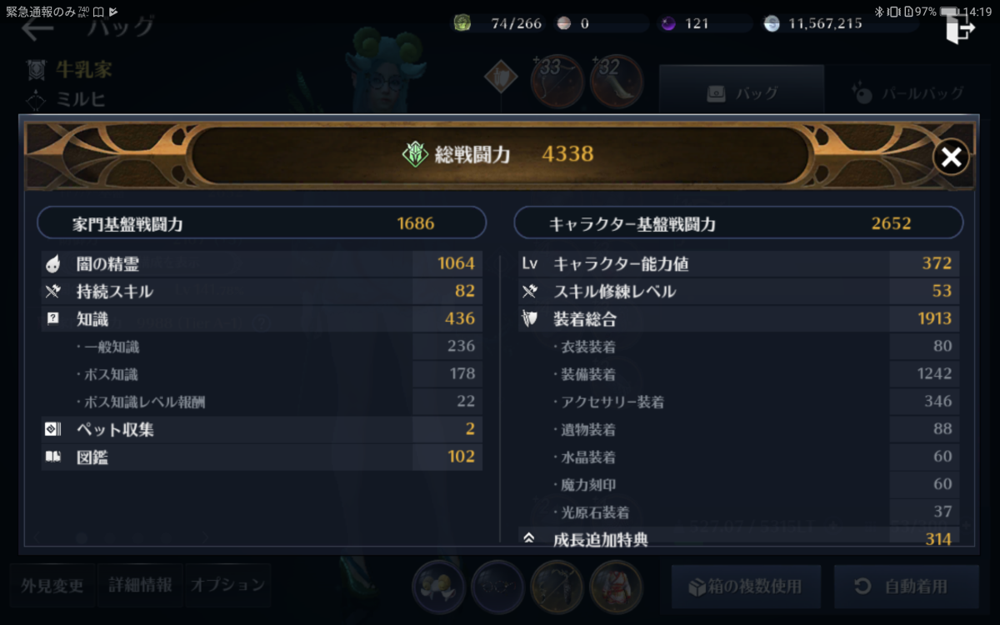
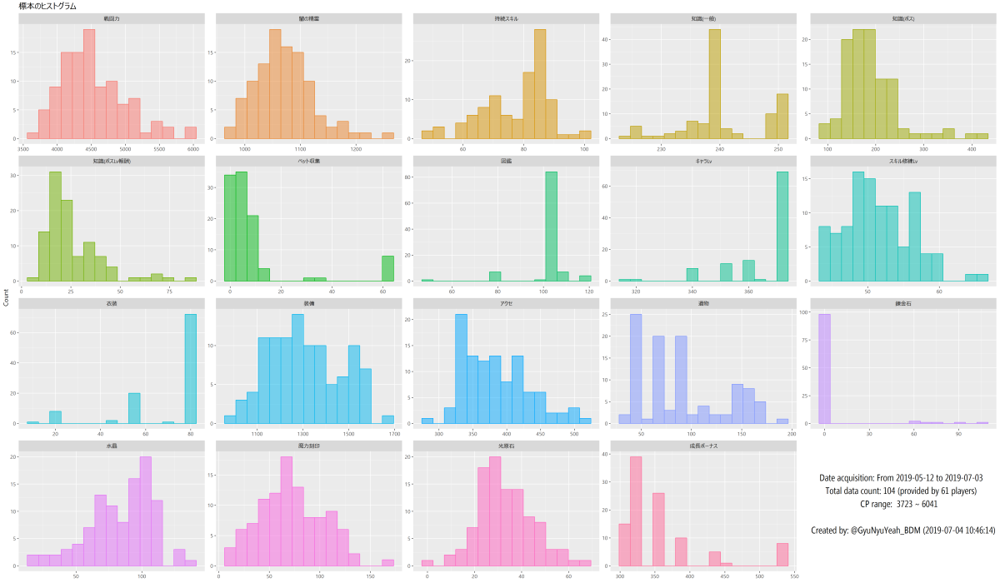
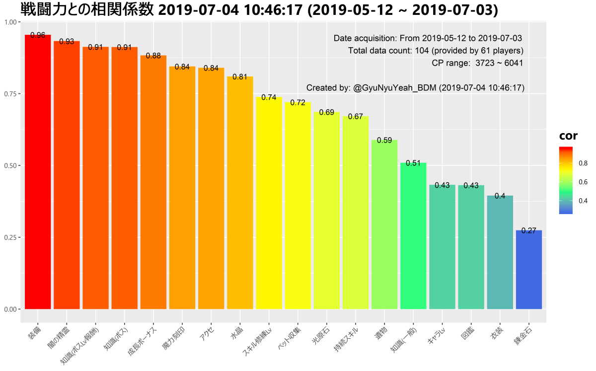

項目毎に戦闘力100区切りの平均値との比較です。
バー平均よりも下回っている場合は、そこが伸びしろ候補です。
バーの上に書いている数値は、戦闘力(あなたとの差分)です。
差分の数値をみて、どの程度伸びしろがあるのか確認してください。
そんなとこないよって人は、黒い精霊 and/or アクセ and/or 遺物突破 and/or 討伐を頑張ってください。
そこらへんの上限値がわからないので。。。
黒い砂漠モバイルでは、他の人の戦闘力の構成は非公開です。そのため、Twitter上で戦闘力細部構成のスクリーンショットをおくってもらい、頂いたスクショと収集したデータとの比較をしたプロットをお返ししています。
一番下にまとめを載せてます。見てね。
自分の伸びしろ探しから始めたことですが、活性化につながればいいなぁと思いながら続けています。
2019-07-03 牛乳家＠disaster (バレノス鯖)
http://bit.do/GyuNyuYeah (今見てるページの短縮URL)
Twitter @GyuNyuYeah_BDM
Discord 牛乳家#4997 (末尾の数字間違ってたので直しました。今のところ、週に3回くらいしかチェックしないです。)
2つのプロットをTLないしDMでお送りします。
お送りするプロットはもっと高解像度です。
あと、いままでコメントつけてましたが、時間がかかるので省きます。ごめんなさい。
項目毎に戦闘力100区切りの平均値との比較です。
バー平均よりも下回っている場合は、そこが伸びしろ候補です。
バーの上に書いている数値は、戦闘力(あなたとの差分)です。
差分の数値をみて、どの程度伸びしろがあるのか確認してください。
そんなとこないよって人は、黒い精霊 and/or アクセ and/or 遺物突破 and/or 討伐を頑張ってください。
そこらへんの上限値がわからないので。。。

プレイヤー毎の戦闘力100区切りの平均値の散布図と回帰曲線です。
黒丸が平均値で、赤丸があなたのデータです。
複数回送って頂いている場合は、過去のデータ(戦闘力が低いデータ)ほど色が薄くしてます。
赤丸が青い線より下にあるところが伸びしろ候補です。
項目は上の図と変わりませんが、こちらのほうが視覚的にとらえることができます。 サンプルが少ないため、青い線はサンプル数とともに変化します。
自分のキャラクター情報を表示し、 <戦闘力構成を表示>"をタップ。
そうすると、戦闘力細部構成が表示されます。

スクリーンショットのDMをください。
Twitter @GyuNyuYeah_BDM @GyuNyuYeah_BDMDiscord 牛乳家#4997
スクリーンショットは、表示したまま(光原石が見切れるくらい)で大丈夫です。
成長ボーナスは他の項目から算出できますし、成長ボーナスの細部は記録していません。
追って、上記のプロットをお送りいたします。
なお、DMはフォロー外からも受け取るようにしています。
ゲーム用アカウント以外しかアカウントがなく、痕跡を残したくない場合は、メッセージ内で教えてください。
その場合、フォローをしません。
こちらからプロットを送信した後は、DMを削除していただいてもかまいませんし、不安であればブロックしていただいて構いません。
嫁さんに内緒の作業(黒さば自体も含めて)です(;ωA
対応可能な時間帯の目安は以下のとおり。
上記時間以外にお送りいただいた分は後ほど対応いたします。
順調に増えてます。ありがとうございます。 前回の遺物2スロ化、今回の錬金石の実装など、アップデートにより戦闘力に大きな変化が生じています。 そのため、現在プレイヤーごとの100区切りの戦闘力の平均値でまとめていますが、スクショの撮影時期でも分ける必要があります。いままで、スクショの入手時期も記録しているのでデータ欠損ということはないのですが、めんどくさい。グループあたりのｎがさらに減るから偏りが大きくなるだろうし。 現状、データの前処理もRでfor文のゴリ押しなんで処理は遅い。データの構造から再度考えないといけないかも。。。 アプデの影響とか、戦闘力毎のの構成要素の比率の推移とか確認できるようになるから、おもしろそうなんだけどな。 何度でもいいます。すくしょくだしあ。

| 項目 | 最小値 | 第一四分位数 | 中央値 | 平均値 | 第三四分位数 | 最大値 | 標準偏差 |
|---|---|---|---|---|---|---|---|
| 戦闘力 | 3723.00 | 4162.75 | 4448.5 | 4534.17 | 4827.75 | 6041 | 484.94 |
| 闇の精霊 | 975.00 | 1040.00 | 1070.0 | 1071.64 | 1094.00 | 1259 | 52.35 |
| 持続スキル | 50.00 | 72.00 | 82.0 | 77.97 | 86.00 | 102 | 11.05 |
| 知識(一般) | 224.00 | 238.75 | 240.0 | 240.97 | 248.00 | 251 | 6.81 |
| 知識(ボス) | 96.00 | 152.00 | 177.5 | 188.76 | 216.00 | 424 | 56.51 |
| 知識(ボスLv報酬) | 8.00 | 16.00 | 21.0 | 25.84 | 33.00 | 88 | 14.65 |
| ペット収集 | 0.00 | 2.00 | 5.0 | 9.29 | 7.00 | 62 | 16.15 |
| 図鑑 | 48.00 | 102.00 | 102.0 | 100.75 | 102.00 | 117 | 8.88 |
| キャラLv | 316.00 | 362.00 | 372.0 | 365.24 | 372.00 | 372 | 11.59 |
| スキル修練Lv | 44.00 | 48.00 | 51.0 | 51.42 | 55.00 | 66 | 4.68 |
| 衣装 | 10.00 | 53.00 | 80.0 | 68.81 | 80.00 | 80 | 19.08 |
| 装備 | 982.00 | 1185.50 | 1293.5 | 1310.73 | 1433.25 | 1670 | 155.08 |
| アクセ | 289.00 | 343.75 | 379.0 | 384.33 | 415.00 | 522 | 48.54 |
| 遺物 | 37.00 | 46.75 | 86.0 | 89.73 | 118.00 | 194 | 42.32 |
| 錬金石 | 0.00 | 0.00 | 0.0 | 4.43 | 0.00 | 106 | 18.50 |
| 水晶 | 16.00 | 67.00 | 90.5 | 83.87 | 101.00 | 136 | 24.63 |
| 魔力刻印 | 7.75 | 48.50 | 71.5 | 71.88 | 94.50 | 164 | 31.84 |
| 光原石 | 0.00 | 26.00 | 32.0 | 33.13 | 40.00 | 67 | 11.78 |
| 成長ボーナス | 308.00 | 316.00 | 316.0 | 355.15 | 350.00 | 534 | 62.17 |

縦軸に項目の値、横軸に100区切りの戦闘力をとった散布図。太目の青線が平滑化曲線です。
プレイヤー毎に色分けをしています。
* プレイヤー名は伏せてます。
名前出していいよ、という方はDMください。
複数のデータがあるプレイヤーについては線で結びました。
PC推奨。スマホ、タブレットじゃ操作しづらいかもしれません。。。
あと、データ込みのプロットなのでかなり重いです。
リンク先に戻るボタンはないので、ブラウザの戻るを使ってください。
闇の精霊Lv
持続スキル
知識 一般
知識 ボス
知識 ボスLv報酬
ペット
図鑑
キャラLv
スキル修練Lv
衣装
装備
アクセ
遺物
錬金石 New!
水晶
魔力刻印
光原石
成長ボーナス